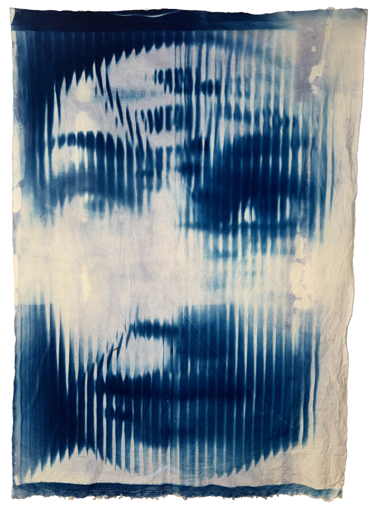

Telling the Story of the Monster as I See It.
A fashion design project that channels the creator’s personal mythology into garment construction — exploring the tension between monstrosity and sensitivity through silhouette, material, and the stories we tell about the creatures we see within ourselves.